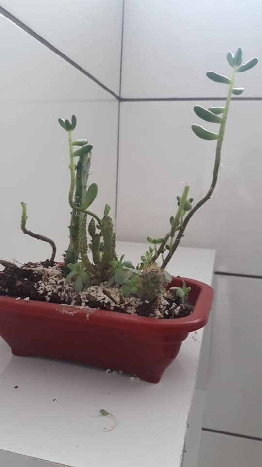
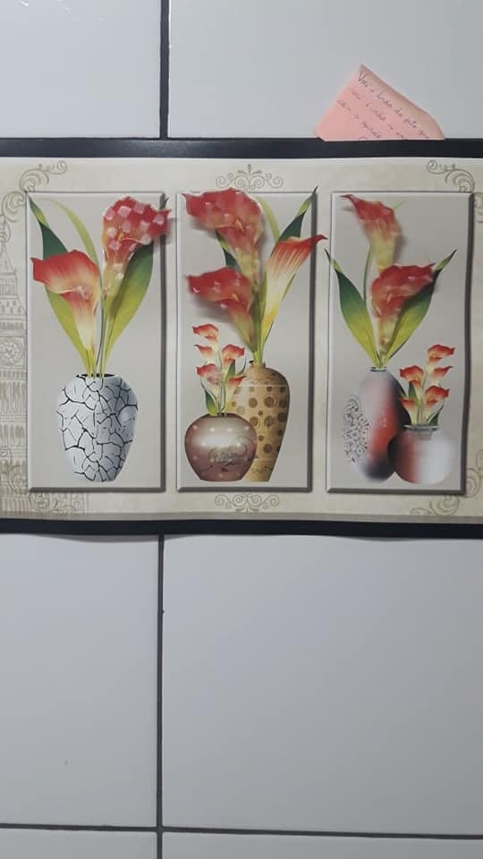
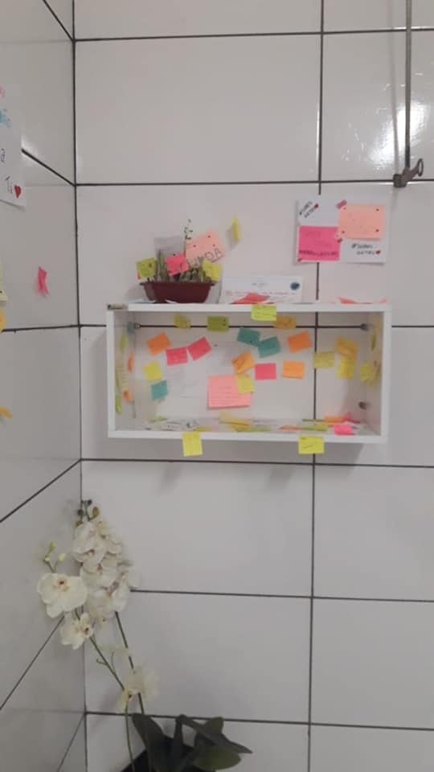
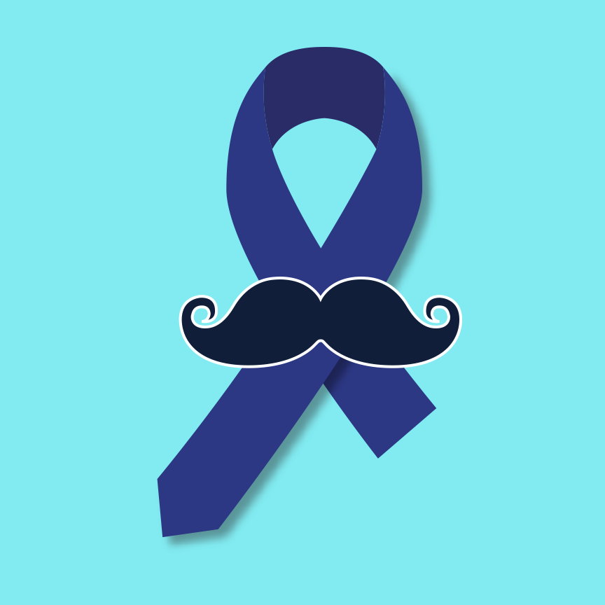

O Grêmio Estudantil junto com a direção, professores e funcionários deu início ao Projeto Páscoa Solidária que tem o objetivo de arrecadar chocolates que serão revertidos a famílias carentes da comunidade. Esse projeto desperta o sentimento de solidariedade e oportuniza uma ação educativa. Contamos com a sua compreensão e agradecemos desde já seu gesto solidário que fará a Páscoa de alguém mais feliz! 😉 (Os chocolates deverão ser entregues até o dia 15/04 na direção ou a um participante do Grêmio)
  O Grêmio Estudantil e alunas do Colégio Estadual General Carneiro tiveram a iniciativa de se inspirar no Projeto Girassol que consiste em transformar o banheiro feminino e masculino em um espaço agradável e aconchegante. O espaço no banheiro se torna mais harmonioso, com a presença de uma caixa de produtos de higiene que ficará novamente a disposição das estudantes. O objetivo desse Projeto é que promova o bem-estar, amizade e parceria, transformando o espaço em uma troca de elogios mútuos. Esse é o real significado de Sororidade, a união e aliança entre as mulheres, empatia e companheirismo para que juntas possamos alcançar um objetivo em comum. (A caixinha estará disponível na Segunda-Feira e as estudantes podem colaborar também)
💙 Novembro Azul 💙 Criado por um grupo de amigos australianos, o projeto – que tem o bigode como seu símbolo – tem o objetivo de conscientizar os homens sobre cuidados básicos de saúde e, principalmente, sobre a luta contra o câncer de próstata. O movimento chegou no Brasil e, no ICC, virou o Novembro Azul! Informe-se! Previna-se! Pequenas escolhas podem salvar vidas! 💙
O Grêmio Estudantil é uma organização formada unicamente por estudantes e tem como objetivo defender seus interesses. A participação no Grêmio insere o jovem na vida social, cultural e política, e oportuniza que ele desenvolva a autonomia e o espírito de liderança. Uma das funções do Grêmio Estudantil é unir os estudantes, envolvendo-os na promoção de festivais de música, torneios esportivos, apresentações teatrais, debates, entre outros.